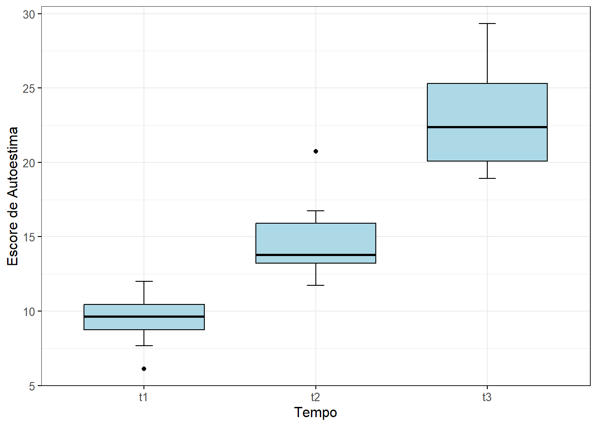
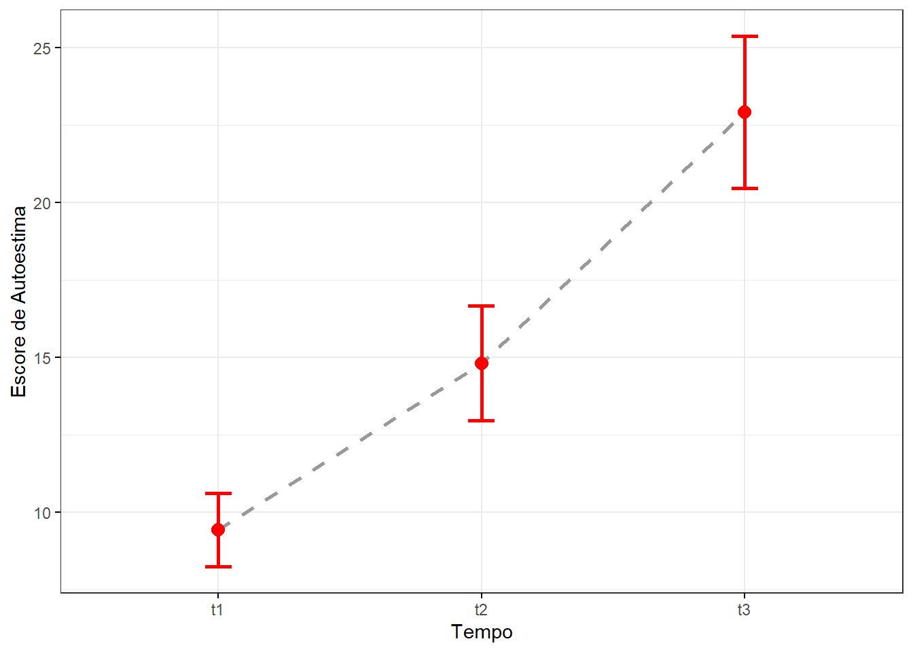
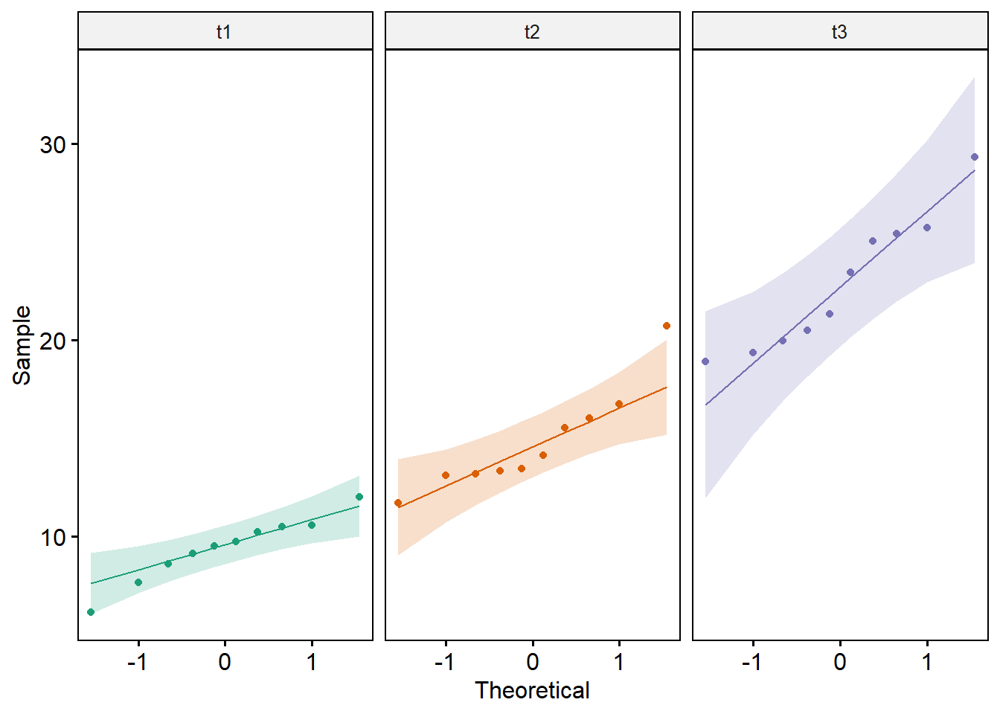
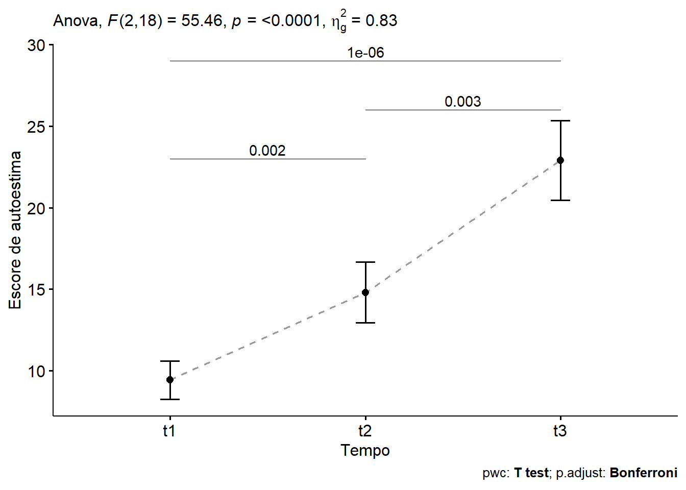
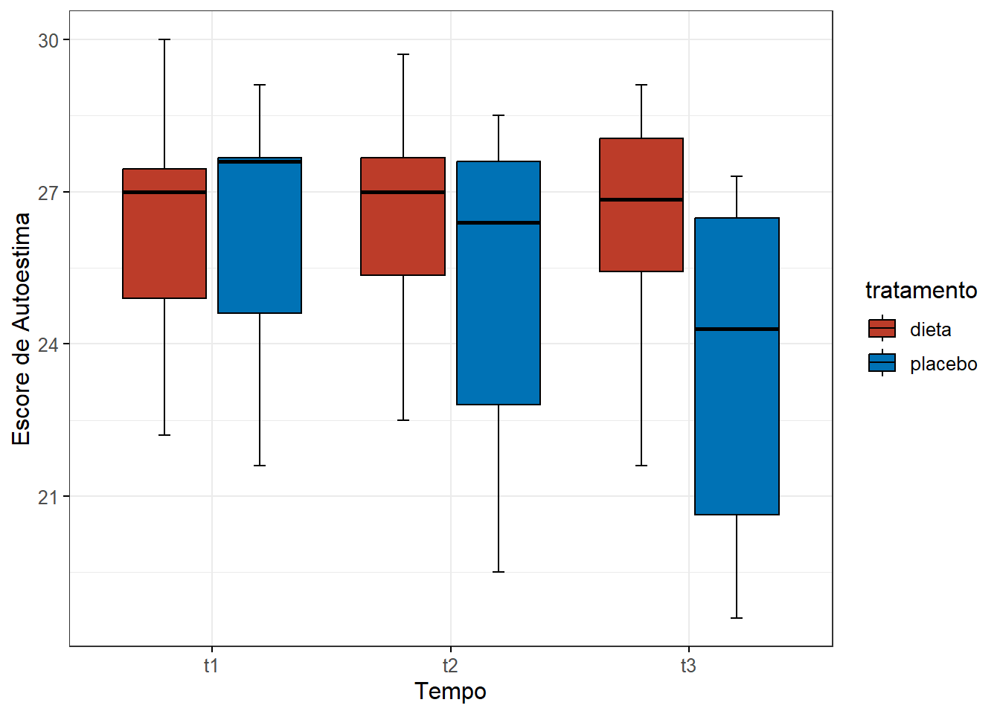
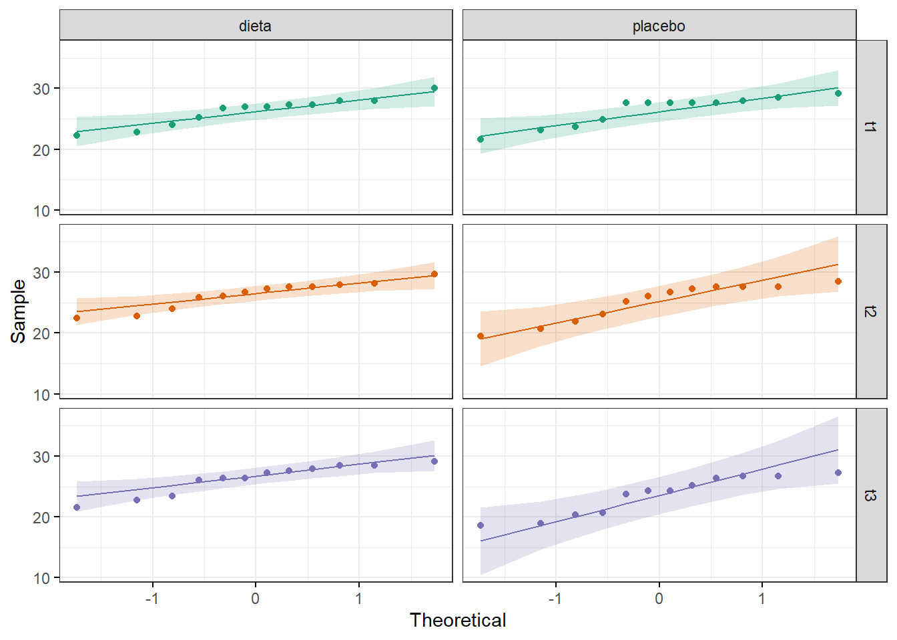
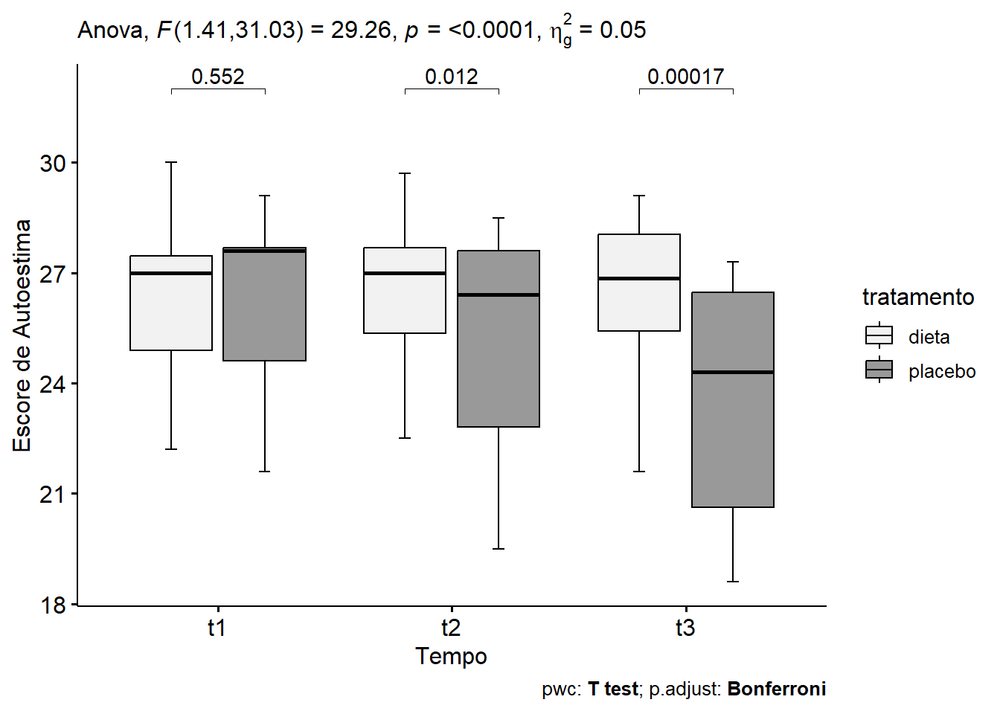
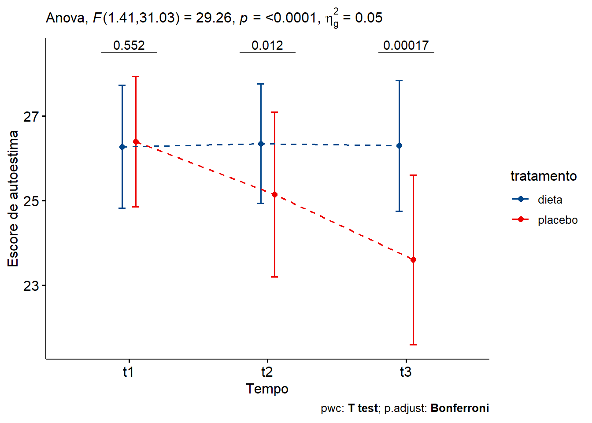

pacman::p_load(dplyr,
ggplot2,
ggpubr,
ggsci,
knitr,
kableExtra,
readxl,
rstatix,
tidyr)14 ANOVA de medidas repetidas
14.1 Pacotes necessários neste capítulo
Instalar e carregar os seguintes pacotes:
14.2 ANOVA de medidas repetidas de um fator
14.2.1 Dados usados nesta seção
Os dados usados como exemplo contém os escores de autoestima de 10 indivíduos em três pontos do tempo durante uma dieta específica para determinar se esta interfere na sua autoestima. A autoestima foi determinada por uma escala (1), (2), cujos resultados variam de 0 a 30 pontos. Valores entre 15 e 25 caracterizam uma autoestima muito boa; abaixo de 15 é considerada baixa autoestima.
Os dados podem ser obtidos aqui. Baixe no seu diretório de trabalho e carregue com a função read_excel() do pacote readxl:
dados <- read_excel("dados/dadosAutoestima.xlsx")14.2.1.1 Exploração e transformação dos dados
Incialmente, observa-se como os dados foram registrados, usando a função head():
head(dados)# A tibble: 6 × 4
id t1 t2 t3
<dbl> <dbl> <dbl> <dbl>
1 1 12.0 15.5 21.3
2 2 7.67 20.7 18.9
3 3 9.73 13.3 29.3
4 4 10.3 14.1 25.0
5 5 8.61 11.7 19.4
6 6 6.14 16.0 20.0Os dados se encontram no formato amplo (a variável tempo está colocada em três colunas) e para realizar a ANOVA de medidas repetidas, o R necessita que os dados estejam no formato longo. Para fazer esta transformação será usada a função pivot_longer()1 do pacote tidyr (3). Nesta função, no argumento data, coloca-se o nome do conjunto de dados; em cols, há necessidade informar as colunas do formato amplo que serão reunidas. No argumento names_to, nomear a coluna que conterá as colunas unificadas e em values_to, especificar o nome da variável no formato longo que conterá os valores. A variável id e a nova variável tempo devem ser convertida para fatores e o novo conjunto de dados será atribuído a um objeto nomeado dadosL:
dadosL <- dados %>%
tidyr::pivot_longer(cols = c(t1, t2, t3),
names_to = "tempo",
values_to = "escores") %>%
convert_as_factor(id, tempo)
head(dadosL)# A tibble: 6 × 3
id tempo escores
<fct> <fct> <dbl>
1 1 t1 12.0
2 1 t2 15.5
3 1 t3 21.3
4 2 t1 7.67
5 2 t2 20.7
6 2 t3 18.9 14.2.1.2 Sumarização dos dados
Calcular algumas estatísticas resumidas dos escores de autoestima por grupos (tempo): média e desvio padrão, usando a funções group_by() e summarise() do pacote dplyr:
dadosL %>%
dplyr::group_by(tempo) %>%
dplyr::summarise(n = n(),
média = mean(escores, na.rm =TRUE),
dp = sd(escores, na.rm = TRUE))# A tibble: 3 × 4
tempo n média dp
<fct> <int> <dbl> <dbl>
1 t1 10 9.42 1.66
2 t2 10 14.8 2.59
3 t3 10 22.9 3.4314.2.2 Visualização dos dados
A visualização pode ser obtida com um conjunto de boxplots (Figura 14.1), acrescido de barras de erro. Estes gráficos permitem visualizar a variação dos escores com o tempo.
ggpubr::ggboxplot (dadosL,
bxp.errorbar = TRUE,
bxp.errorbar.width = 0.1,
x = "tempo",
y = "escores",
color = "black",
fill = "lightblue",
ylab = "Escore de Autoestima",
xlab = "Tempo",
ggtheme = theme_bw(),
legend = "none") +
scale_fill_grey(start=0.95, end=0.6) +
theme (text = element_text (size = 12))

Outra maneira de visualizar os dados é através de um gráfico de linha (Figura 14.2) que mostra bem o comportamento dos escores com o tempo:
ggpubr::ggline(dadosL,
x = "tempo",
y = "escores",
color = "gray60",
add.params = list(color = "red"),
size = 1,
linetype = "dashed",
add = c("mean_ci"),
point.size = 2,
point.color = "red",
ggtheme = theme_bw()) +
ylab("Escore de Autoestima") +
xlab("Tempo")

Os dados mostram que existe uma modificação da autoestima (melhora nitidamente!) à medida que o tempo passa, utilizando a dieta.
14.2.3 Avaliação dos pressupostos
A ANOVA de medidas repetidas faz as seguintes suposições sobre os dados:
- A amostra foi selecionada aleatoriamente da população;
- A variável dependente é normalmente distribuída na população para cada nível do fator dentro dos sujeitos;
- Não deve e existir outliers extremos;
- Existência de esfericidade
14.2.3.1 Identificação de valores atípicos
Não deve haver valores atípicos em nenhuma célula do delineamento Isso pode ser verificado visualizando os dados nos boxplots, mostrados anteriormente, onde se observa a presença de dois outliers, um no t1 e outro em t2. Além disso, pode-se verificar a presença de valores atípicos, usando a função identify_outliers() do pacote rstatix.
dadosL %>%
dplyr::group_by(tempo) %>%
rstatix::identify_outliers(escores)# A tibble: 2 × 5
tempo id escores is.outlier is.extreme
<fct> <fct> <dbl> <lgl> <lgl>
1 t1 6 6.14 TRUE FALSE
2 t2 2 20.7 TRUE FALSE A saída confirma a presença de dois valores atípicos, em t1 e em t2. Entretanto, eles não são extremos, não estão afastados acima de 3 intervalos interquatis e , provavelmente, não trarão problemas, apesar da amostra ser pequena.
14.2.3.2 Avaliação da normalidade
Para testar a hipótese de normalidade dos dados, será utilizado o teste de Shapiro-Wilk através da função shapiro_test (), do pacote rstatix e a função group_by (), incluída no pacote dplyr ou rstatix, junto com o operador pipe (%>%):
dadosL %>%
dplyr::group_by (tempo) %>%
rstatix::shapiro_test(escores)# A tibble: 3 × 4
tempo variable statistic p
<fct> <chr> <dbl> <dbl>
1 t1 escores 0.967 0.859
2 t2 escores 0.876 0.117
3 t3 escores 0.923 0.380A saída exibe valores P acima de 0,05, significando que os escores de autoestima estão normalmente distribuídos em cada momento do tempo.
A normalidade pode também ser avaliada com um gráfico QQ (Figura 14.3) para cada um dos momentos, usando a função ggqqplot () do pacote ggpubr, consulte a vinheta do pacote para maiores detalhes. Foi utilizado também o argumento faced.by, que divide em painéis, organizando-os como uma grade, de acordo com o momento ( t1, t2 e t3).
ggpubr::ggqqplot(dadosL,
x = "escores",
facet.by = "tempo",
color = "tempo",
palette = get_palette("Dark2", 3),
legend = "none")

Observando o gráfico, como quase todos os pontos caem aproximadamente ao longo da linha de referência, pode-se assumir a normalidade dos escores em todos os momentos do tempo.
14.2.3.3 Esfericidade
A violação da suposição de esfericidade pode distorcer os cálculos de variância resultantes de um teste ANOVA de medidas repetidas mais liberal (ou seja, um aumento na taxa de erro Tipo I). Nesse caso, a ANOVA de medidas repetidas deve ser corrigida apropriadamente dependendo do grau em que a esfericidade foi violada. Na relação entre os escores, há necessidade de pressupor que exista esfericidade (\(\epsilon\) - épsilon), também chamada de circularidade, grosseiramente semelhante à homocedasticidade da ANOVA de uma via. A ANOVA de medidas repetidas pressupõe que as variâncias das diferenças entre todas as combinações de condições relacionadas (ou níveis de grupo) são iguais. A melhor maneira de verificá-la é calcular as diferenças entre os pares de escores em todas as combinações dos níveis de tratamento.
O teste de esfericidade de Mauchly é usado para avaliar se a suposição de esfericidade é atendida ou não. Isso é relatado automaticamente ao usar a função anova_test () do pacote rstatix. Se o teste resulta em um valor P menor do que 0,05, pode-se concluir de que há uma diferença significativa entre as variâncias das diferenças.
O principal problema da violação da condição de esfericidade é a ocorrência de testes F não exatos e liberais, com consequente perda do poder do teste. Existem várias correções que podem ser aplicadas para produzir uma razão F válida, através do ajuste dos graus de liberdade.
As correções mais frequentemente preconizadas são o \(\epsilon\) de Greenhouse-Geisser (GGe) e o \(\epsilon\) de Huynh-Feldt (HFe). Huynh e Feldt (4) relataram que quando a correção \(\epsilon\) de Greenhouse-Geisser é > 0,75 muitas hipóteses nulas falsas deixam de ser rejeitadas, isto é, o teste é muito conservador, propondo outra correção dos graus de liberdade. É recomendado o uso da correção de Greenhouse-Geisser para o ajuste dos graus de liberdade quando \(\epsilon\) < 0,75 ou nada se sabe a respeito da esfericidade (5). Avaliando o poder destes testes, Muller (6) verificou que a correção de Greenhouse-Geisser fornece um controle adicional do erro Tipo I, enquanto o poder é maximizado.
14.2.4 Cálculo da estatística do teste
Como mencionado, será usada a função anova_test(), do pacote rstatix, para o cálculo da ANOVA de medidas repetidas, criando um modelo que será atribuído ao objeto mod.anova:
mod.anova <- rstatix::anova_test(data = dadosL,
dv = escores,
wid = id,
within = tempo)
mod.anovaANOVA Table (type III tests)
$ANOVA
Effect DFn DFd F p p<.05 ges
1 tempo 2 18 55.463 2.02e-08 * 0.829
$`Mauchly's Test for Sphericity`
Effect W p p<.05
1 tempo 0.551 0.092
$`Sphericity Corrections`
Effect GGe DF[GG] p[GG] p[GG]<.05 HFe DF[HF] p[HF]
1 tempo 0.69 1.38, 12.42 2.16e-06 * 0.774 1.55, 13.94 6.04e-07
p[HF]<.05
1 *Em primeiro lugar, observar o Teste de Mauchly para a esfericidade. Verifica-se que o efeito do tempo tem um valor P = 0,092, ou seja, > 0,05 e, portanto, não houve violação da esfericidade e não há necessidade de observar as correções do \(\epsilon\) de Greenhouse-Geisser (GGe) ou o \(\epsilon\) de Huynh-Feldt (HFe).
Desta forma, pode-se dizer que houve uma modificação significativa no escore de de autoestima, à medida que o tempo passou (F (2,18) = 55,5, P < 0.0001, \(\eta^2 = 0,83\)).
Usando a função get_anova_table() do pacote rstatix para extrair a tabela ANOVA, a correção de esfericidade Greenhouse-Geisser é aplicada automaticamente aos fatores que violam a suposição de esfericidade.
rstatix::get_anova_table(mod.anova)ANOVA Table (type III tests)
Effect DFn DFd F p p<.05 ges
1 tempo 2 18 55.463 2.02e-08 * 0.829Onde,
- F indica que se está comparando com uma distribuição F (teste F); (2, 18) indica os graus de liberdade no numerador (DFn) e no denominador (DFd), respectivamente; 55,5 indica o valor da estatística F.
- p especifica o valor P.
- ges é o tamanho do efeito generalizado (quantidade de variabilidade devido ao fator dentro dos assuntos), eta ao quadrado \(\eta^2\).
14.2.5 Testes post hoc
É possível fazer comparações por pares. realizando vários testes t pareados entre os níveis do dentro do fator (tempo), usando a função pairwise_t_test(), incluída no R base. Os valores P são ajustados usando o método de correção de testes múltiplos de Bonferroni.
pwc <- dadosL %>%
pairwise_t_test(
escores ~ tempo, paired = TRUE,
p.adjust.method = "bonferroni"
)
pwc# A tibble: 3 × 10
.y. group1 group2 n1 n2 statistic df p p.adj p.adj.signif
* <chr> <chr> <chr> <int> <int> <dbl> <dbl> <dbl> <dbl> <chr>
1 escores t1 t2 10 10 -4.97 9 7.73e-4 2e-3 **
2 escores t1 t3 10 10 -13.2 9 3.34e-7 1e-6 ****
3 escores t2 t3 10 10 -4.87 9 8.87e-4 3e-3 ** Todas as diferenças pareadas são estatisticamente significativas.
14.2.6 Relatando os resultados da ANOVA de medidas repetidas unifatorial
Pode-se relatar de forma simples:
Os escores de autoestima se modificaram de forma significativa de acordo com a passagem do tempo, F(2, 18) = 55,5, p < 0,0001, \(\eta^2\) = 0,82.
Análises post hoc, com um ajuste de Bonferroni, revelaram que todas as diferenças pareadas, entre os pontos de tempo, foram estatisticamente diferentes (P < 0,05).
Uma opção de apresentação gráfica, é o gráfico de linhas (Figura 14.4), usando a função ggline() do pacote ggpubr, junto com os teste estatísticos:
gl <- ggpubr::ggline(dadosL,
x = "tempo",
y = "escores",
color = "gray60",
add.params = list(color = "black"),
size = 0.7,
linetype = "dashed",
add = "mean_ci",
point.size = 1,
point.color = "black")
gl +
ggpubr::stat_pvalue_manual(pwc,
label = "p.adj",
tip.length = 0.00,
y.position = c(23, 29, 26)) +
labs (x = "Tempo",
y = "Escore de autoestima",
subtitle = get_test_label (mod.anova, detailed = TRUE),
caption = get_pwc_label(pwc))

14.3 ANOVA de medidas repetidas de dois fatores
14.3.1 Dados usados nesta seção
O conjunto de dados de dadosAutoestima2.xlsx contém as medidas dos escores de autoestima de 12 indivíduos inscritos em 2 ensaios clínicos sucessivos de curto prazo (4 semanas): placebo e dieta especial.
Os dados podem ser obtidos aqui. Baixe no seu diretório de trabalho.
Cada participante participou dos dois ensaios. A ordem das tentativas foi equilibrada e foi permitido tempo suficiente entre os ensaios para permitir que quaisquer efeitos dos ensaios anteriores se dissipassem (washout).O escore de autoestima foi registrado em três momentos: no início (t1), no meio (t2) e no final (t3) dos ensaios.
A questão é investigar se esse tratamento dietético de curto prazo pode induzir um aumento significativo do escore de autoestima ao longo do tempo. Em outras palavras, se quer saber se há interação significativa entre dieta e tempo no escore de autoestima.
14.3.1.1 Leitura dos dados
A leitura dos dados será feita com a função read_excel() do pacote readxl. Após a leitura, será exibida 3 linhas aleatórias por grupo de tratamento, usando a função sample_n_by() do pacote rstatix::
autoestima <- readxl::read_excel("dados/dadosAutoestima2.xlsx")
set.seed(123)
autoestima %>% sample_n_by(tratamento, size = 3)# A tibble: 6 × 5
id tratamento t1 t2 t3
<dbl> <chr> <dbl> <dbl> <dbl>
1 3 dieta 27.3 27.3 27.6
2 12 dieta 24 24 23.4
3 10 dieta 27 27.9 28.5
4 2 placebo 29.1 28.5 26.4
5 6 placebo 21.6 19.5 18.9
6 5 placebo 23.1 21.9 20.414.3.1.2 Transformação dos dados
Os dados autoestima estão no formato amplo e as colunas t1, t2 e t3 devem ser reunidas, em uma única variável denominada tempo, transformando o formato amplo em longo, usando a função pivot_longer() do pacote tidyr. A seguir, converter em fator esta nova variável tempo e a variável identificadora id:
autoestimaL <- autoestima %>%
tidyr::pivot_longer(cols = c(t1, t2, t3),
names_to = "tempo",
values_to = "escores") %>%
convert_as_factor(id, tratamento, tempo)Explorar o novo conjunto de dados no formato longo:
autoestimaL %>% sample_n_by(tratamento, tempo, size = 1)# A tibble: 6 × 4
id tratamento tempo escores
<fct> <fct> <fct> <dbl>
1 4 dieta t1 27.3
2 6 dieta t2 22.5
3 9 dieta t3 27.9
4 10 placebo t1 27.6
5 11 placebo t2 27.6
6 5 placebo t3 20.4Nesse exemplo, o efeito do “tempo” no escore de autoestima é nossa variável focal, nossa principal preocupação.
No entanto, pensa-se que o efeito “tempo” será diferente se o tratamento for realizado ou não. Nesse cenário, a variável “tratamento” é considerada como variável moderadora.
14.3.1.3 Sumarização dos dados
Os dados serão por tratamento e tempo e, em seguida, serão calculadas algumas estatísticas resumidas da variável de escore: média e sd (desvio padrão).
autoestimaL %>%
dplyr::group_by(tratamento, tempo) %>%
rstatix::get_summary_stats(escores, type = "mean_sd")# A tibble: 6 × 6
tratamento tempo variable n mean sd
<fct> <fct> <fct> <dbl> <dbl> <dbl>
1 dieta t1 escores 12 26.3 2.29
2 dieta t2 escores 12 26.4 2.23
3 dieta t3 escores 12 26.3 2.44
4 placebo t1 escores 12 26.4 2.42
5 placebo t2 escores 12 25.2 3.07
6 placebo t3 escores 12 23.6 3.1614.3.1.4 Visualização dos dados
Serão criados boxplots (Figura 14.5) do escore coloridos pelos grupos de tratamento, com cores da paleta do NEJM, usando o pacote ggsci e a função scale_fill_nejm():
ggpubr::ggboxplot (autoestimaL,
bxp.errorbar = TRUE,
bxp.errorbar.width = 0.1,
x = "tempo",
y = "escores",
color = "black",
fill = "tratamento",
ylab = "Escore de Autoestima",
xlab = "Tempo",
ggtheme = theme_bw())+
scale_fill_nejm() +
theme (text = element_text (size = 12))

14.3.2 Avaliação dos pressupostos
Os pressupostos da ANOVA de medidas repetidas de dois fatores são os mesmos da de um fator (Seção 14.2.3).
14.3.2.1 Identificação dos outliers
A observação dos boxplots mostra que não existem valores atípicos. Estes outliers serão analisados, usando função identify_outliers() do pacote rstatix.
autoestimaL %>%
dplyr::group_by(tratamento, tempo) %>%
rstatix::identify_outliers(escores)[1] tratamento tempo id escores is.outlier is.extreme
<0 linhas> (ou row.names de comprimento 0)A saída mostra a ausência de valores atípicos, com já se havia observado nos boxplots (Figura 14.5).
14.3.2.2 Avaliação da normalidade
Para testar a hipótese de normalidade dos dados, será utilizado o teste de Shapiro-Wilk através da função shapiro_test (), do pacote rstatix e a função group_by (), incluída no pacote dplyr ou rstatix, junto com o operador pipe (%>%):
autoestimaL %>%
dplyr::group_by (tratamento, tempo) %>%
rstatix::shapiro_test(escores)# A tibble: 6 × 5
tratamento tempo variable statistic p
<fct> <fct> <chr> <dbl> <dbl>
1 dieta t1 escores 0.919 0.279
2 dieta t2 escores 0.923 0.316
3 dieta t3 escores 0.886 0.104
4 placebo t1 escores 0.828 0.0200
5 placebo t2 escores 0.868 0.0618
6 placebo t3 escores 0.887 0.107 A saída do teste mostra que os escores de autoestima estão normalmente distribuídos em cada momento do tempo, havendo uma exceção: o grupo placebo, no momento t1. Fato que pode ser constatado pela assimetria do boxplot nesse momento do tempo (Figura 14.5).
É possível construir um gráfico QQ (Figura 14.6) para cada um dos momentos, usando a função ggqqplot () do pacote ggpubr, consulte a vinheta do pacote para maiores detalhes. Foi utilizado também a função facet_grid(), do ggplot2, que divide em painéis, organizando-os como uma grade, de acordo com o momento ( t1, t2 e t3).
ggpubr::ggqqplot(data = autoestimaL,
x = "escores",
color = "tempo",
palette = get_palette("Dark2", 3),
legend = "none",
ggtheme = theme_bw()
) +
facet_grid(tempo~tratamento)

Observando o gráfico, como quase todos os pontos caem aproximadamente ao longo da linha de referência, pode-se seguir a análise, pois não há muito problema.
14.3.2.3 Esferecidade
A esferecidade será avaliada junto com a construção do modelo.
14.3.3 Cálculo da estatística do teste
É realizado da mesma maneira do que a ANOVA de medidas repetidas de uma via com a função anova_test() do pacote rstatix:
mod.anova2 <- rstatix::anova_test(data = autoestimaL,
dv = escores,
wid = id,
within = tempo,
between = tratamento,
type = 3)
mod.anova2ANOVA Table (type III tests)
$ANOVA
Effect DFn DFd F p p<.05 ges
1 tratamento 1 22 1.432 2.44e-01 0.059
2 tempo 2 44 28.417 1.19e-08 * 0.049
3 tratamento:tempo 2 44 29.259 8.29e-09 * 0.050
$`Mauchly's Test for Sphericity`
Effect W p p<.05
1 tempo 0.582 0.003 *
2 tratamento:tempo 0.582 0.003 *
$`Sphericity Corrections`
Effect GGe DF[GG] p[GG] p[GG]<.05 HFe DF[HF]
1 tempo 0.705 1.41, 31.03 1.04e-06 * 0.739 1.48, 32.52
2 tratamento:tempo 0.705 1.41, 31.03 8.00e-07 * 0.739 1.48, 32.52
p[HF] p[HF]<.05
1 6.19e-07 *
2 4.72e-07 *Analisando o teste de Mauchly para a esfericidade, verifica-se que houve violação da esfericidade, tanto para o efeito do tempo (W = 0,582, P = 0,003) como para a interação tratamento:tempo (W = 0,582, P = 0,003). Esses resultados indicam a necessidade de correção para ajustar os graus de liberdade. A correção de Greenhouse-Geisser é utilizada, pois é o recomendado quando W < 0,75 (veja Seção 14.2.3.3). O modelo ANOVA, gerado pela função anova_test(), entregou a tabela da ANOVA sem correção, o teste de Mauchly e a correção dos graus de liberdade da esfericidade (Greenhouse-Geisser (GGe) e Huynh-Feldt (HFe)). A tabela da ANOVA corrigida (Tabela 14.1) pode, então, ser obtida, usando a função get_anova_table (), do pacote rstatix, com o mod.anova2 e correction = “GG” como argumentos:
| Effect | DFn | DFd | F | p | p<.05 | ges |
|---|---|---|---|---|---|---|
| tratamento | 1.00 | 22.00 | 1.432 | 2.44e-01 | 0.059 | |
| tempo | 1.41 | 31.03 | 28.417 | 1.00e-06 | * | 0.049 |
| tratamento:tempo | 1.41 | 31.03 | 29.259 | 8.00e-07 | * | 0.050 |
Como existe uma interação estatisticamente significativa (F(1,41, 31,26) = 29,6, P < 0,0001) entre tratamento e o tempo, deve-se prestar atenção a este fato. Os efeitos principais isolados perdem a importância. Para esta análise são necessários testes posteriores.
14.3.4 Teste post hoc
Uma interação significativa entre os dois fatores indica que o impacto que um fator (tratamento) tem na variável desfecho (escore de autoestima) depende do nível do outro fator (tempo), e vice-versa. Assim, é possível decompor a interação entre os dois fatores significativos em:
Efeito principal simples: executar o modelo unifatorial da primeira variável (tratamento) em cada nível da segunda variável (tempo),
Comparações simples pareadas: se o efeito principal simples for significativo, executar várias comparações pareadas para determinar quais grupos são diferentes.
Para uma interação não significativa entre os dois fatores, há necessidade de determinar se tem algum efeito principal estatisticamente significativo da saída ANOVA.
14.3.4.1 Procedimento para uma interação significativa entre os dois fatores
Efeito do tratamento
No exemplo, será analisado o efeito do tratamento no escore de auto-estima em cada momento no tempo. Note que como o tratamento tem apenas dois níveis (dieta e placebo), o teste de ANOVA e teste t pareado fornecem os mesmos resultados.
Efeito do tratamento em cada ponto de tempo
tratamento <- autoestimaL %>%
dplyr::group_by(tempo) %>%
rstatix::anova_test(dv = escores, wid = id, within = tratamento) %>%
rstatix::get_anova_table() %>%
rstatix::adjust_pvalue(method = "bonferroni")
tratamento# A tibble: 3 × 9
tempo Effect DFn DFd F p `p<.05` ges p.adj
<fct> <chr> <dbl> <dbl> <dbl> <dbl> <chr> <dbl> <dbl>
1 t1 tratamento 1 11 0.376 0.552 "" 0.000767 1
2 t2 tratamento 1 11 9.03 0.012 "*" 0.052 0.036
3 t3 tratamento 1 11 30.9 0.00017 "*" 0.199 0.00051Comparações pareadas entre os grupos de tratamentos
pwc <- autoestimaL %>%
dplyr::group_by(tempo) %>%
pairwise_t_test(escores ~ tratamento,
paired = TRUE,
p.adjust.method = "bonferroni")
pwc# A tibble: 3 × 11
tempo .y. group1 group2 n1 n2 statistic df p p.adj
* <fct> <chr> <chr> <chr> <int> <int> <dbl> <dbl> <dbl> <dbl>
1 t1 escores dieta placebo 12 12 -0.613 11 0.552 0.552
2 t2 escores dieta placebo 12 12 3.00 11 0.012 0.012
3 t3 escores dieta placebo 12 12 5.56 11 0.00017 0.00017
# ℹ 1 more variable: p.adj.signif <chr>Considerando o valor P ajustado de Bonferroni (p.adj), pode-se observar que o efeito principal simples do tratamento não foi significativo no ponto de tempo t1 (P = 1). Torna-se significativo em t2 (p = 0,036) e t3 (p = 0,00051).
Comparações pareadas mostram que o escore médio de autoestima foi significativamente diferente entre o grupo placebo e dieta em t2 (P = 0,12) e t3 (P = 0,00017), mas não em t1 (P = 0,55).
Efeito do tempo
Observe que também é possível realizar a mesma análise para a variável tempo em cada nível de tratamento. Esta análise, necessariamente, não precisa ser feita!
Efeito do tempo em cada nível de tratamento
tempo <- autoestimaL %>%
dplyr::group_by(tratamento) %>%
rstatix::anova_test(dv = escores, wid = id, within = tempo) %>%
rstatix::get_anova_table() %>%
adjust_pvalue(method = "bonferroni")
tempo# A tibble: 2 × 9
tratamento Effect DFn DFd F p `p<.05` ges p.adj
<fct> <chr> <dbl> <dbl> <dbl> <dbl> <chr> <dbl> <dbl>
1 dieta tempo 2 22 0.078 0.925 "" 0.000197 1
2 placebo tempo 2 22 39.7 0.00000005 "*" 0.145 0.0000001Comparações pareadas entre pontos no tempo
pwc2 <- autoestimaL %>%
dplyr::group_by(tratamento) %>%
pairwise_t_test(escores ~ tempo, paired = TRUE,
p.adjust.method = "bonferroni")
pwc2# A tibble: 6 × 11
tratamento .y. group1 group2 n1 n2 statistic df p p.adj
* <fct> <chr> <chr> <chr> <int> <int> <dbl> <dbl> <dbl> <dbl>
1 dieta escores t1 t2 12 12 -0.522 11 0.612 1 e+0
2 dieta escores t1 t3 12 12 -0.102 11 0.921 1 e+0
3 dieta escores t2 t3 12 12 0.283 11 0.782 1 e+0
4 placebo escores t1 t2 12 12 4.53 11 0.000858 3 e-3
5 placebo escores t1 t3 12 12 6.91 11 0.0000255 7.65e-5
6 placebo escores t2 t3 12 12 6.49 11 0.0000449 1.35e-4
# ℹ 1 more variable: p.adj.signif <chr>Após a execução do código, verifica-se que o efeito do tempo é significativo apenas para o placebo, F(2, 22) = 39,7, p < 0,0001. As comparações pareadas mostram que todas as comparações entre os pontos de tempo foram estatisticamente significativas para o placebo.
14.3.4.2 Procedimento para uma interação não significativa entre os dois fatores
Se a interação não for significativa, é preciso interpretar os efeitos principais para cada uma das duas variáveis: tratamento e tempo. Um efeito principal significativo pode ser acompanhado com comparações pareadas
No exemplo (consulte a Tabela 14.1), não houve efeito principal estatisticamente significativo para o tratamento (F(1, 22) = 1,43, P = 0,244) no escore de autoestima. Entretanto, os escores foram afetados significativamente pelo tempo (F(1,41, 31,03) = 28,41, P < 0,0001).
14.3.5 Relatando os resultados da ANOVA de medidas repetidas de dois fatores
O resultado pode ser relatado da seguinte forma:
Uma ANOVA de medidas repetidas de dois fatores foi realizada para avaliar o efeito de diferentes tratamentos dietéticos ao longo do tempo no escore de autoestima.
Houve uma interação estatisticamente significativa entre
tratamentoetempono escore de autoestima, F(1,41, 31,03) = 29,26, P < 0,0001 (Tabela 14.1). Por isso, o efeito da variáveltratamentofoi analisado em cada ponto de tempo. Os valores de P foram ajustados usando o método de correção de testes múltiplos de Bonferroni. O efeito da variáveltratamentofoi significativo em t2 (P = 0,036) e t3 (P = 0,00051), mas não no ponto de tempo t1 (P = 1).Comparações pareadas, usando o teste t pareado, mostram que o escore médio de autoestima foi significativamente diferente entre os ensaios
placeboedietanos pontos de tempo t2 (P = 0,012) e t3 (P = 0,00017), mas não em t1 (P = 0,55).
14.3.5.1 Visualização dos resultados
Os resultados podem ser visualizados através de gráficos tipo boxplots (Figura 14.7) ou por um gráfico de linha (Figura 14.8). Os gráficos foram construídos , usando as funções ggboxplot() e ggline() do pacote ggpubr. Os boxplots receberam um preenchimento em tons de cinza, bem interessante em publicações científicas; o gráfico de linha, usando o pacote ggsci, recebeu as cores da paleta do periódico Lancet.
Boxplots
bxp <- ggpubr::ggboxplot (autoestimaL,
bxp.errorbar = TRUE,
bxp.errorbar.width = 0.1,
x = "tempo",
y = "escores",
color = "black",
fill = "tratamento",
ylab = "Escore de Autoestima",
xlab = "Tempo")+
scale_fill_grey(start=0.95, end=0.6) +
theme(legend.position="right") +
theme (text = element_text (size = 12))
pwc <- pwc %>% add_xy_position(x = "tempo")
bxp +
stat_pvalue_manual(pwc,
label = "p.adj",
tip.length = 0.01,
hide.ns = FALSE,
y.position = c(32, 32, 32)) +
labs(subtitle = get_test_label(mod.anova2, detailed = TRUE),
caption = get_pwc_label(pwc))

Gráfico de linha
ggl <- ggline(
autoestimaL,
x = "tempo",
y = "escores",
color = "tratamento",
palette = "lancet",
linetype = "dashed",
size = 0.7,
shape = 19,
add = "mean_ci",
error.plot = "errorbar",
position = position_dodge(width = 0.2),
ggtheme = theme_pubr()) +
theme(legend.position="right")
ggl + ggpubr::stat_pvalue_manual(pwc,
label = "p.adj",
tip.length = 0.00,
y.position = c(28.5, 28.5, 28.5)) +
labs (x = "Tempo",
y = "Escore de autoestima",
subtitle = get_test_label (mod.anova2, detailed = TRUE),
caption = get_pwc_label(pwc))

Veja a Seção 12.3.1.1 para mais detalhes da função.↩︎